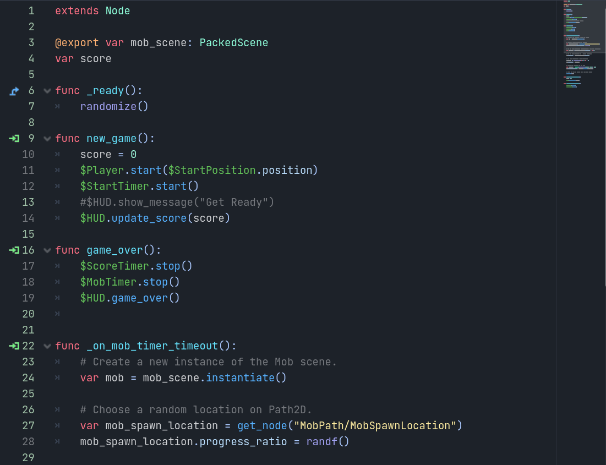

Starting Fresh
Now that I've made the switch to Godot, what now? While poking through the Godot Docs, I found several tutorials to help me get started. More specifically, I found a tutorial about making your first 2D game called "Dodge the Creeps!". This tutorial looked perfect. It goes over the basics of how the Godot editor works, how to structure a project, and how to build a 2D game. A great starting point.
Unfortunately, I don't have any screenshots from when I was following the tutorial. But I can show the final game & talk about my first impressions of Godot.
My First 2D Game
I had a pretty positive experience with this tutorial. At first, I felt very out of place with a new editor. But step by step, it progressively got easier to use the more I followed the tutorial.
Here are a few screenshots of the finished game. If you're interested in the steps of this tutorial, I recommend scrolling through the docs. I won't be covering it in this Devlog. Here is the "Dodge the creeps!" tutorial doc.

Godot also has an in-house scripting language known as GDScript. It's incredibly similar to Python. But if you'd like to use another language, Godot also supports C# and C++. In my case, I decided to stick with GDScript, partly because this tutorial used it. But also because I haven't worked in Python, or a language like Python, in quite a while. It gives me the feeling of learning a programming language for the first time & helps me focus on it.
Final Results
With this tutorial being my first experience with Godot, I'd say it was easy to pick up. Its design allows for simple and quick feature building. But can quickly turn complex depending on the feature you try to implement.
Overall, I can confidently say I've enjoyed my time so far with Godot. Here is a short gif to show what the final game looked like.
‹ Previous Devlog: #1 Next Devlog: #3 ›